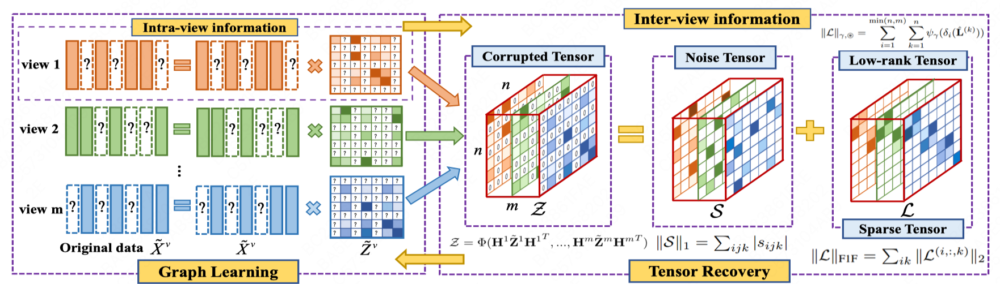

Biography
|
|
-
2023.2-NOW Computer Vision Intern in Meituan, Visual Intelligence Department, CV Security Group, Security & Vision Intelligence, ShangHai.
|
News !
- [April/2023]: One paper on “Contrastive learning” is accepted to ICML 2023.
- [Feb/2023]: Joined Meituan, Visual Intelligence Department as a computer vision intern.
- [Dec/2022]: Awarded the 1st Prize Academic Scholarship of Nanjing University.
- [Dec/2022]: One paper on “Unsupervised incomplete multi-view clustering” is accepted to AAAI 2023.
Research Interest
I work in the field of self-supervised and unsupervised learning, computer vision and machine learning. Currently, I focus on the following research topics:
- Learning with Unsupervised Data: How to design models that can learning without manually labeled data and why such models work.
- AIGC: How to achieve high-quality vision content synthesis and how to detect deepfakes for security purposes.
Publications
Journal Articles:
Conference Articles:
|

|
-
Chao Zhang, Huaxiong Li, Wei Lv, Zizheng Huang, Yang Gao, Chunlin Chen.
Enhanced Tensor Low-Rank and Sparse Representation Recovery for Incomplete Multi-View Clustering.
In: AAAI Conference on Artificial Intelligence (AAAI), 2023.(CCF-A)
|
Awards and Honors
- 2022 & 2021, 1st Prize, Academic Scholarship, Nanjing University.
- 2021, Outstanding Graduate, China University of Mining and Technology.
- 2020 & 2018, National Scholarship, Highest scholarship in China.
- 2020, 1st Prize, Dioo Scholarship, Jiangsu Dioo Microelectronics Co.
- 2020, Finalist Award, COMAP Mathematical Contest in Modeling, Top 1% of 13753 teams.